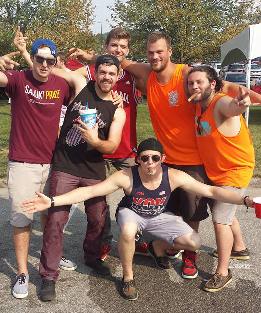

Benett Dierckman's Bio
My name is Benentt Dierckman, I am 21 years old. I was born in Los Angeles, and was raised in Carmel Indiana. I graduated from Carmel Online Learning Center and am now a junior attending Indiana University, studying informatics. I plan on graduating in the fall of 2017.
In my spare time I enjoy golfing, longboarding, and spending time with family and friends. My all time favorite way to spend time with friends and family is at the Indiana University tailgates.
